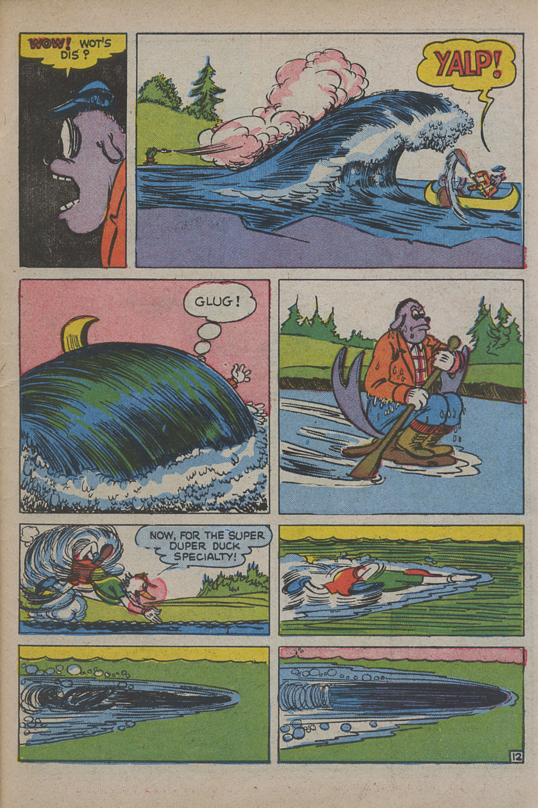
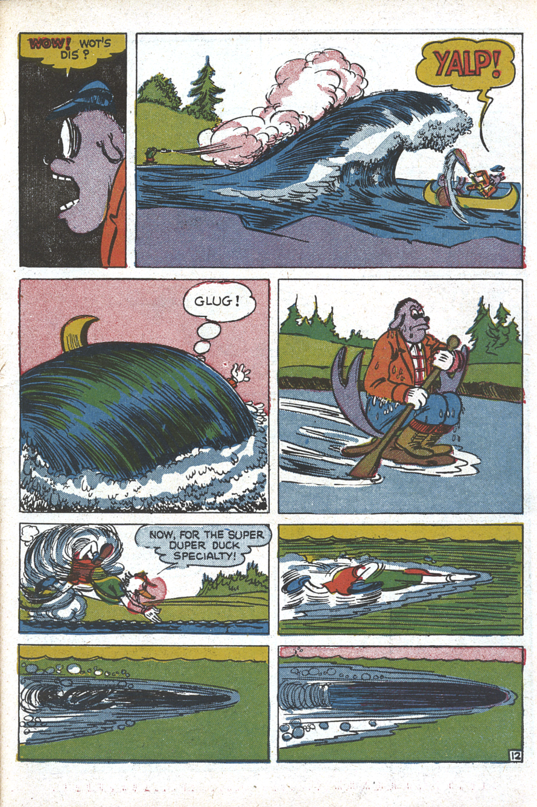
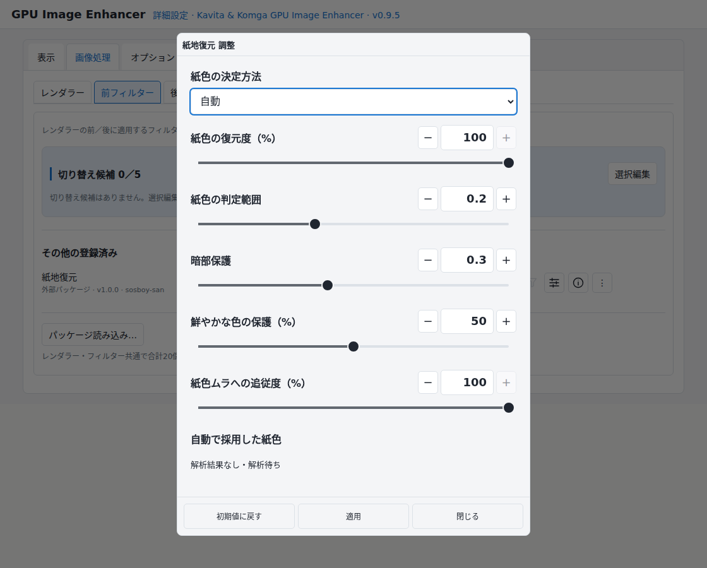
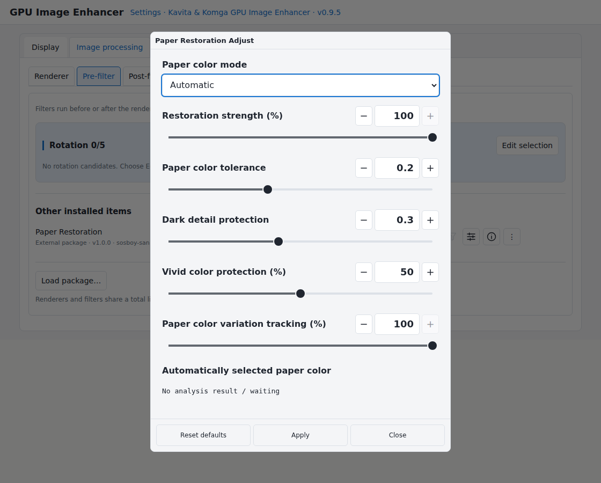
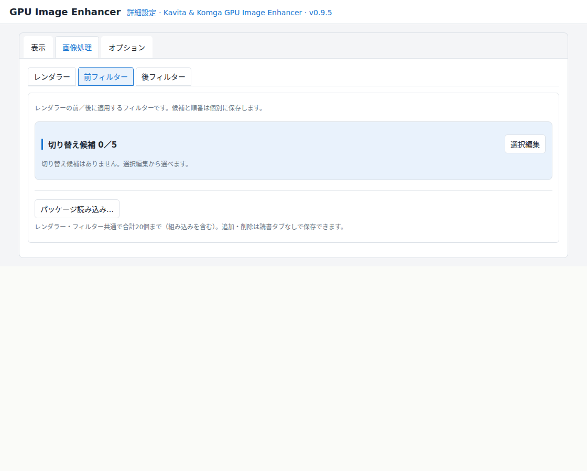
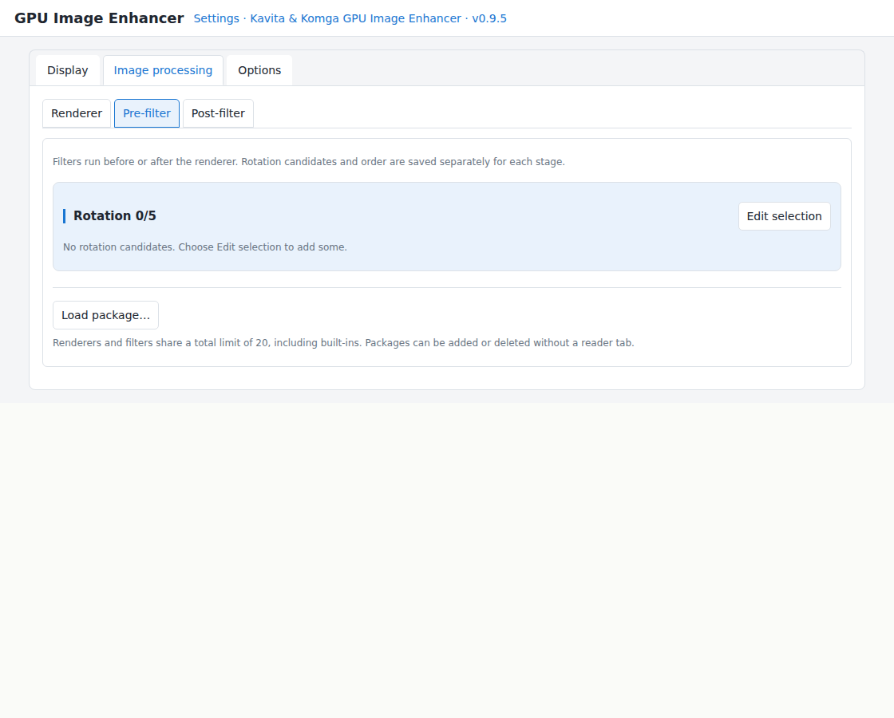
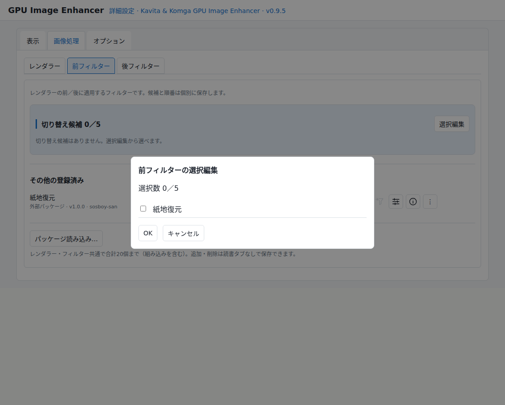
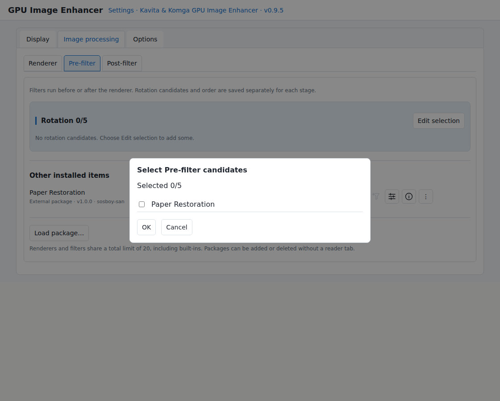

ブラウザーの漫画表示を、 もっと自由に。 もっと美しく。More freedom. Better-looking comics in your browser.
GPUによる高品質な拡大・縮小に、前後のフィルターを組み合わせる。 いつものKavita・Komgaで、専用コミックビューアのような本格的な画質調整を。Combine high-quality GPU resizing with filters before and after it. Bring advanced image-quality controls to your familiar Kavita or Komga reader.
1696×2528 → 1073×1600 px（約63.3％）。前後フィルターなし。原画像はAI（Gemini）で作成し、BrowserとLoHalo Jr.で実際に縮小表示してキャプチャーしています。1696×2528 → 1073×1600 px (about 63.3%). No pre/post-filters. The source artwork was created with Gemini AI; the images were captured after actual downscaling with Browser and LoHalo Jr.
02
紙の黄ばみ・色むらを整える
Restore yellowed, uneven paper
↔比較画像は準備中ですComparison images are being prepared
掲載条件を確認した実際の処理結果を、ここに追加します。Actual processing results will be added after publication permissions are checked.
補正前・比較基準Before / reference

Paper Restoration

画素等倍で細部を比較できます。全体表示は縮小される場合があります。Use 1:1 pixels to inspect detail. Fit view may reduce the image size.
Super Duck 第2号／Komga公式デモ。LoHalo Jr.、1500×2250 → 898×1347 px（約59.9％）。同じ位置の左ページを切り出しています。補正は自動モードです。Super Duck #2 / official Komga demo. LoHalo Jr., 1500×2250 → 898×1347 px (about 59.9%). Matching left-page crops. Paper restoration uses automatic mode.
YOUR READING, YOUR CHOICE
三つの段階を、自由に組み合わせる。
Three stages. Your combination.
紙の色を整え、画面に合わせて拡大・縮小し、仕上げに輪郭を調整。サイト本来のレイアウトや読書操作をなるべく維持します。Restore paper color, resize to your screen, then fine-tune edges. Keep the site’s layout and reading controls as much as possible.
01
前フィルターPre-filter
拡大・縮小の前に、紙色や線色を調整。Adjust paper or line color before resizing.
02
レンダラーRenderer
画像を表示サイズに合わせて拡大・縮小。Resize the image to its display size.
03
後フィルターPost-filter
表示サイズで輪郭などを仕上げる。Fine-tune edges at the final display size.
RENDERERS
拡大・縮小にも、選択肢を。
Choose how your images are resized.
組み込みBuilt-in
LoHalo Jr.
GEGLのLoHaloを基にした、GPUによる拡大・縮小。GPU resizing based on GEGL’s LoHalo.
組み込みBuilt-in
NoHalo Jr.
GEGLのNoHaloを基にした、もうひとつの拡大・縮小方式。An alternative GPU resizing method based on GEGL’s NoHalo.
別配布Separate module
Lanczos3
作品や倍率に合わせて、拡大・縮小方式の選択肢を追加。Add another resizing option to suit the artwork and scale.
標準表示Standard
Browser
ブラウザー標準の表示。比較の基準としても使えます。Standard browser rendering, also useful as a comparison reference.
LoHalo Jr.・NoHalo Jr.は、GEGLの開発者とアルゴリズムへの敬意を込めた名称です。完全互換の移植ではなく、GPUIE向けに適応した実装です。LoHalo Jr. and NoHalo Jr. retain their names out of respect for GEGL’s developers and algorithms. They are adapted implementations for GPUIE, not fully compatible ports.名前の由来を読むRead about the names
FILTERS
好みに合わせて、見え方を整える。
Make the image feel right for you.
組み込みBuilt-in
GPU Unsharp Mask
表示サイズに合わせた後で、輪郭の強さを調整します。Adjust edge sharpness after resizing to the display size.
別配布Separate module
Paper Restoration
古い漫画の紙の黄ばみや色むらを補正。紙色の自動推定と手動指定に対応します。Correct yellowing and uneven paper tint, using automatic estimation or a manually selected paper color.
別配布Separate module
Monochrome Line Color
モノクロと判定したページの線色や濃さを調整。カラー保護の強さも選べます。Adjust line color and darkness on pages identified as monochrome, with selectable color-protection modes.
紙地復元は印刷色を完全に保護するものではありません。カラー判定にも取りこぼしがあります。画像に合わせて設定を調整してください。Paper restoration cannot completely protect printed colors, and color classification can miss colored areas. Adjust settings to suit the image.
外部モジュールで処理を追加できます。実行可能なJavaScriptのため、信頼できる配布元のものを使ってください。External modules add processing options. They contain executable JavaScript; use only sources you trust.
QUICK CONTROLS
読書中に、その場で切り替える。
Switch and adjust while reading.
サイトの読書メニューを表示すると、クイックアイコンを使えます。Show the site’s reading menu to access quick controls.
本体のON／OFFTurn image processing on or off
前フィルターを切り替えCycle pre-filters
レンダラーを切り替えCycle renderers
後フィルターを切り替えCycle post-filters
選択中のフィルターを調整Adjust the selected filter
HUDの表示・非表示Show or hide the HUD
詳細設定を開くOpen detailed settings
切り替える候補は詳細設定で選べます。Choose rotation candidates in detailed settings.


現在のUI実装による説明用の再現画面。Guide screen rendered from the current UI implementation.
パッケージを追加して使う
Add a package and start using it
初回はブラウザーの拡張機能設定で、GPUIEのユーザースクリプト実行を許可してください。First, allow user-script execution for GPUIE in your browser’s extension settings.
モジュールパックをダウンロードして展開します。Download and extract the module pack.
詳細設定の「画像処理」で、レンダラーまたは前後のフィルターを開きます。In detailed settings, open Image processing and choose Renderer or Pre-filter / Post-filter.
「パッケージ読み込み…」で、展開した .js／.txt ファイルを選びます。Choose “Load package…” and select the extracted .js or .txt file.


「選択編集」で追加したモジュールにチェックを入れ、「OK」。Choose “Edit selection”, check the new module, and confirm with “OK”.


読書画面へ戻り、クイックアイコンから選んで使います。Return to the reader and select it using the corresponding quick icon.
画面は説明用の再現です。PC・タッチ端末で配置が異なる場合があります。Screens are reproduced for this guide. Layout may differ on PC and touch devices.
GET STARTED
いつものリーダーで、使い始める。
Get started in your usual reader.
拡張機能を導入するInstall the extension
Kavita・Komgaのタブからサイトを登録するRegister the site from its Kavita or Komga tab
レンダラーを選び、必要なフィルターを追加するChoose a renderer and add filters as needed
初期状態は本体ON、Browser選択、フィルター未選択です。By default, the extension is ON, Browser is selected, and no filters are selected.
Edge Canary 157.0.4333.0 試験的なCRX導入・動作確認Experimental CRX installation and operation
Komgaの新GUIは未検証です。WebGL2などの対応機能が必要です。AndroidはCanary版での試験的な利用で、更新によって導入方法や動作が変わる場合があります。Komga’s new GUI is untested. Features including WebGL2 are required. Android use is experimental with a Canary build; updates may change installation or operation.
READY FOR YOUR NEXT PAGE
ブラウザーの読書に、画質調整を。
Image-quality controls for browser reading.
0.9.5 βの公開準備中です。本体ZIP・CRXと、追加モジュールパックを別配布します。Version 0.9.5 beta is being prepared for publication. The extension ZIP and CRX will be distributed separately from the module pack.